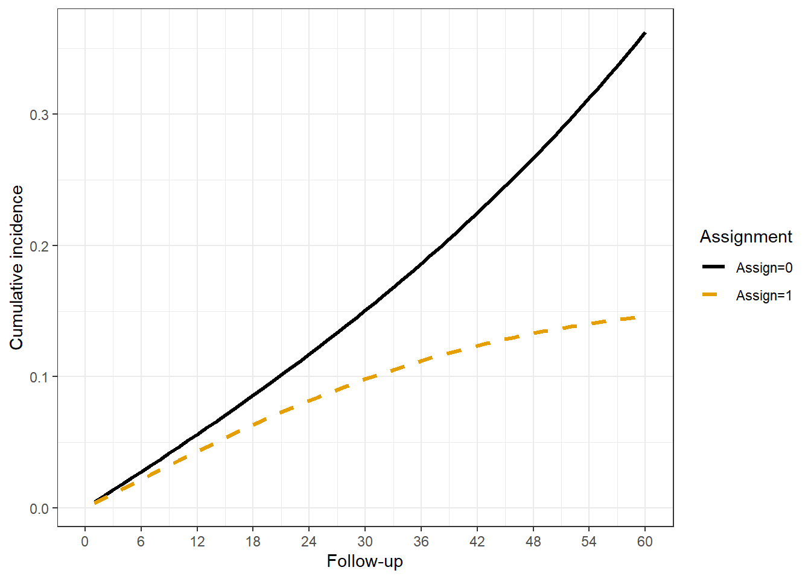

Rows: 104,910
Columns: 17
$ model <chr> "ay", "ay", "ay", "ay", "ay", "ay", "ay", "ay", "ay", "ay", …
$ id <int> 1, 1, 1, 1, 1, 1, 1, 1, 1, 1, 1, 1, 1, 1, 1, 1, 1, 1, 1, 1, …
$ time <int> 1, 2, 3, 4, 5, 6, 7, 8, 9, 10, 11, 12, 13, 14, 15, 16, 17, 1…
$ t_outcome <dbl> Inf, Inf, Inf, Inf, Inf, Inf, Inf, Inf, Inf, Inf, Inf, Inf, …
$ t_treat <dbl> Inf, Inf, Inf, Inf, Inf, Inf, Inf, Inf, Inf, Inf, Inf, Inf, …
$ t_censor <dbl> Inf, Inf, Inf, Inf, Inf, Inf, Inf, Inf, Inf, Inf, Inf, Inf, …
$ censor <int> 0, 0, 0, 0, 0, 0, 0, 0, 0, 0, 0, 0, 0, 0, 0, 0, 0, 0, 0, 0, …
$ event <int> 0, 0, 0, 0, 0, 0, 0, 0, 0, 0, 0, 0, 0, 0, 0, 0, 0, 0, 0, 0, …
$ assign <dbl> 0, 0, 0, 0, 0, 0, 0, 0, 0, 0, 0, 0, 0, 0, 0, 0, 0, 0, 0, 0, …
$ enter <dbl> 0, 1, 2, 3, 4, 5, 6, 7, 8, 9, 10, 11, 12, 13, 14, 15, 16, 17…
$ exit <int> 1, 2, 3, 4, 5, 6, 7, 8, 9, 10, 11, 12, 13, 14, 15, 16, 17, 1…
$ age <dbl> 70, 70, 70, 70, 70, 70, 70, 70, 70, 70, 70, 70, 70, 70, 70, …
$ female <dbl> 0, 0, 0, 0, 0, 0, 0, 0, 0, 0, 0, 0, 0, 0, 0, 0, 0, 0, 0, 0, …
$ X <int> 0, 0, 0, 0, 0, 0, 0, 0, 0, 0, 0, 0, 0, 0, 0, 0, 0, 0, 0, 0, …
$ X_t <int> 0, 0, 0, 0, 0, 0, 0, 0, 0, 0, 0, 0, 0, 0, 0, 1, 0, 0, 0, 0, …
$ treat <dbl> 0, 0, 0, 0, 0, 0, 0, 0, 0, 0, 0, 0, 0, 0, 0, 0, 0, 0, 0, 0, …
$ outcome <dbl> 0, 0, 0, 0, 0, 0, 0, 0, 0, 0, 0, 0, 0, 0, 0, 0, 0, 0, 0, 0, …Estimation
Data
Example uses the cloned dataset panel generated in Data.
The person- or clone-level data must be expanded to a longitudinal panel where each observation (row) is a period of follow-up.
Estimation of censoring weights
Note
There is no consideration here to model training, causal DAGs or covariate selection. It is simply a toy example to show the procedure.
Probability of treatment initiation
Since the example treatment strategy focuses on whether or not treatment initiates, the censoring weights can be computed from a model on the uncloned dataset where the event is treatment, and time to treatment.
This may be a little confusing, but since my dataset is already cloned (duplicated by assignment). I take the clones where assign=0 from the dta_c_panel dataset. These are clones assigned to not receive treatment, so their censoring time is time to treatment start and can be used for the treatment model. We are estimating time to treatment, not outcome. The clone, assign=0 is already set up for this but for other projects this step will have to be modified if the comparator is different.
1 d_glm_wt = glm(treat ~ poly(time, 2, raw=T) + X + X_t + age + poly(age, 2) + female,
data=dta_c_panel[dta_c_panel$assign==0, ], family=binomial())
2 dta_c_panel$pr_treat = predict(d_glm_wt, newdata = dta_c_panel, type='response')- 1
-
logit model, where outcome is treat event, and it is regressed on a polynomial for time, along with covariates
X,X_t,ageandfemale. - 2
- For each person, I estimate the conditional probability of treatment initiation at each timepoint.
Note
There is some controversy in this workflow. Some do it like here by modeling the censoring probability off of a person-unique (no clones) dataset with treatment times, but others do it directly in the cloned dataset with the outcome of “censoring” where that may mean treatment initiation or some other thing.(Gaber et al. 2024)
I am unsure which is better?!
Calculation of weights
This step is highly specific to a project and must be considered carefully. I have found this step is error-prone to errors due to misunderstandings about what the treatment strategy entails, or if the data is setup incorrectly. I refer you to the Weighting scheme section for further discussion.
Note
I only show the procedure here, for full diagnostics to evaluate weighting and model specification see: IPW diagnostics
Unstabilized weights
setDT(dta_c_panel)
dta_c_panel[, ipw := fcase(
1 assign==0 & censor==0, 1 / (1-pr_treat),
2 assign==0 & censor==1, 0,
assign==1 & censor==1, 0,
3 assign==1 & time < 12, 1,
4 assign==1 & time == 12 & t_treat < 12, 1,
5 assign==1 & time == 12 & t_treat ==12 & censor==0, 1 / (pr_treat),
6 assign==1 & time > 12, 1
)]- 1
- (assign=0); because the model is Pr(treat=1), the no treatment clones are assigned 1 - Pr(treat=1), or the cumulative probability of no vaccination ~ Probability of remaining uncensored.
- 2
- If a clone is censored, I assigned weight=0.
- 3
- (assign=1) Clones cannot artificially censor prior to grace period
- 4
- (assign=1) If treatment started prior to grace window ending, the clone cannot censor
- 5
- (assign=1) If a clone is treated in the final period, then the probability of remaining uncensored is the probability of initiating treatment by the final period OR (1 - cumulative probability of no treatment at time-point of grace window).
- 6
-
(assign=1) Set post-grace period weights = 1 for all, since treatment must occur by period 12 and no artificial censoring happens after this point for
assign==1
Stabilized weights
1 dta_c_panel[, marg_c0 := 1-mean(censor), by = list(assign, time)]
dta_c_panel[, marg_ipw := fcase(
2 assign==0 & censor==0, marg_c0 / (1-pr_treat),
assign==0 & censor==1, 0,
assign==1 & censor==1, 0,
assign==1 & time < 12, 1,
assign==1 & time == 12 & t_treat < 12, 1,
assign==1 & time == 12 & t_treat ==12 & censor==0, marg_c0 / (pr_treat),
assign==1 & time > 12, 1
)]- 1
- Compute the mean by period and assignment group.
- 2
- Replace the numerator in the ipw calculation with the marginal probability.
Final weights
dta_c_panel[, `:=`(ipw = cumprod(ipw),
marg_ipw = cumprod(marg_ipw)),
by=list(id, assign)] Compute the cumulative product within person-clone to reach final IPCW.
Note
Be very careful with IPW truncation with this design. If the probability of treatment is very low, then those treated at the end of the grace period will have very large weights. If you truncate at 99% for example, it could mostly just truncate the weights of those treated at the end of the grace period, and this could severely bias estimates. These persons are meant to account for all those being artificially censored in the treatment group for non-treatment and so will likely have large weights by design.
Outcome model
PLR model for cumulative incidences
With the estimated weights, it is simple to generate weighted cumulative incidences:
1 d_glm_pe_1 = glm(event==0 ~ poly(time, 2, raw=T),
data=dta_c_panel[dta_c_panel$assign==1, ],
family=binomial(), weights = ipw)
d_glm_pe_0 = glm(event==0 ~ poly(time, 2, raw=T),
data=dta_c_panel[dta_c_panel$assign==0, ],
family=binomial(), weights = ipw)
2 dta_c_panel$pr_1 = predict(d_glm_pe_1, newdata = dta_c_panel,
type='response')
dta_c_panel$pr_0 = predict(d_glm_pe_0, newdata = dta_c_panel,
type='response')- 1
-
Estimate probability of the event for each assignment group separately. This isn’t necessary but its good practice, and adjusting for other covariates may give different results as well. Note the
weights = ipwargument. Rglm()will generate a warning message because the weighted counts are “non-integer”, but this is expected and not a problem. - 2
- Assign conditional probabilities for event to each person-clone.
Estimate cumulative incidences
1 dta_c_panel[, `:=`(pr_cum_1 = cumprod(pr_1)), by=list(id, assign)]
dta_c_panel[, `:=`(pr_cum_0 = cumprod(pr_0)), by=list(id, assign)]
2 d_plrwt_est = dta_c_panel %>%
group_by(time) %>%
summarize(pr_ev_1 = mean(1-pr_cum_1),
pr_ev_0 = mean(1-pr_cum_0),
.groups = 'drop') %>%
ungroup %>%
mutate(cid = pr_ev_1 - pr_ev_0,
cir = pr_ev_1 / pr_ev_0)- 1
- To estimate the cumulative event-free survival (1 - P(S) for incidence) you take the cumulative product within person-clone.
- 2
-
Summarize across group, time. I will generally compute both the risk difference
cidand relative differencescir.
Summarize Results
Figure

The results can be easily depicted in a standard graph like any survival analysis. You could also combine the lineplot with a table of the unweighted or weighted person and event counts at each point of follow-up like many do in a Kaplan-Meier analysis.
Table
|
|
|
|
References
Gaber, Charles E., Armen A. Ghazarian, Paula D. Strassle, Tatiane B. Ribeiro, Maribel Salas, Camille Maringe, Xabier Garcia-Albeniz, Richard Wyss, Wei Du, and Jennifer L. Lund. 2024. “De-Mystifying the Clone-Censor-Weight Method for Causal Research Using Observational Data: A Primer for Cancer Researchers.” Cancer Medicine 13 (23): e70461. https://doi.org/10.1002/cam4.70461.